Companion to eval/REPORT.md. Codex: gpt-6.2-astra | Judges: Claude sonnet + Gemini gemini-4-carbon-medium | Total Judged Items: 1122
| System | Challenge Win Rate (Wilson 95% CI) | Disambiguation Sense Accuracy | Challenge MQM Maj+Crit / 100 | Non-Challenge Win Rate | check Errors | Visual Defects |
|---|---|---|---|---|---|---|
| A (Codex + Wraith MCP) | 2.8% [1.7%, 4.5%] | 99.5% [98.3%, 99.9%] | 4.8 | 6.7% [2.6%, 15.9%] | 0 | 25 |
| A0 (Codex, no Wraith) | 4.8% [3.3%, 6.9%] | 99.8% [98.7%, 100.0%] | 1.8 | 11.7% [5.8%, 22.2%] | 28 | 26 |
| B (DeepL + XML + glossary) | 0.5% [0.2%, 1.6%] | 59.3% [54.6%, 63.8%] | 34.0 | 0.0% [0.0%, 6.0%] | 53 | 66 |
| B+ctx (DeepL + context ≤300c) | 0.5% [0.2%, 1.6%] | 86.7% [83.2%, 89.6%] | 18.0 | 3.3% [0.9%, 11.4%] | 42 | 57 |
nextjs-commerce → de)| Key & Category | Source (en) & Sense | A (Wraith) | A0 (No Wraith) | B (DeepL) | B+ctx (DeepL+ctx) | Panel |
|---|---|---|---|---|---|---|
hours.openBadgeambiguous | Open Adjective meaning the retail store is currently open for business (NOT the verb 'to open' a file). | Geöffnet | Geöffnet | Öffnen | Geöffnet | tie |
invoice.openActionambiguous | Open Imperative verb button to open/view a PDF invoice document (NOT 'open for business'). | Öffnen | Öffnen | Öffnen | Öffnen | tie |
community.postHeadingambiguous | Post Noun referring to a published forum post / article entry (NOT the action verb 'to publish'). | Beitrag | Beitrag | Beitrag | Beitrag | tie |
composer.postActionambiguous | Post Imperative verb button to publish/submit a new reply (NOT the noun 'a post'). | Posten | Veröffentlichen | Beitrag | Post | A0 |
checkout.orderLabelambiguous | Order Noun referring to a customer's commercial purchase order (NOT sorting sequence). | Bestellung | Bestellung | Bestellung | Bestellung | tie |
catalog.orderLabelambiguous | Order Noun referring to display sort sequence/arrangement of list items (NOT a purchase order). | Reihenfolge | Sortierreihenfolge | Bestellung | Reihenfolge | tie |
modal.closeButtonambiguous | Close Imperative verb button to dismiss/close a dialog window (NOT proximity 'nearby'). | Schließen | Schließen | Schließen | Schließen | tie |
branch.closeBadgeambiguous | Close Adjective meaning geographically nearby / short distance away (NOT the verb 'close window'). | In der Nähe | In der Nähe | Schließen | In der Nähe | tie |
pricing.freeTagambiguous | Free Adjective meaning zero cost / gratis ($0 pricing tier), NOT available disk space. | Kostenlos | Kostenlos | Kostenlos | Kostenlos | tie |
storage.freeTagambiguous | Free Adjective meaning unoccupied/available storage space remaining (NOT 'free of charge'). | GB frei | frei | Kostenlos | Free | A0 |
profile.saveButtonambiguous | Save Imperative verb to persist/store form changes (NOT 'save money'). | Speichern | Speichern | Speichern | Speichern | tie |
promo.saveLabelambiguous | Save Verb meaning to save money / get a price reduction on an annual plan (NOT 'save file'). | Sparen Sie | Sparen Sie | Speichern | Sparen | tie |
wizard.backButtonambiguous | Back Navigation control to return to the previous step (NOT physical back or verb 'support'). | Zurück | Zurück | Zurück | Zurück | tie |
warranty.backPromiseambiguous | We back every purchase for two years. Verb 'back' meaning to guarantee / stand behind a product warranty (NOT 'go back'). | Wir geben Ihnen auf jeden Kauf zwei Jahre Garantie. | Bei jedem Kauf erhalten Sie zwei Jahre Garantie. | Auf jeden Kauf gewähren wir zwei Jahre Garantie. | Wir gewähren auf jeden Kauf eine zweijährige Garantie. | tie |
billing.chargeHeadingambiguous | Charge Noun meaning a financial fee / line-item debit on a statement (NOT electrical battery charge). | Abbuchung | Belastung | Anklage | Gebühr | tie |
device.chargeHeadingambiguous | Charge Noun meaning remaining electrical battery level of a hardware terminal (NOT a billing fee). | Akkustand | Akkustand | Anklage | Charge | tie |
contract.signActionambiguous | Sign Imperative verb to electronically sign a legal agreement (NOT a physical notice/signage). | Signieren | Unterschreiben | Zeichen | Sign | tie |
storefront.signNoticeambiguous | Check the sign at the pickup counter. Noun meaning a physical posted notice/placard at a store counter (NOT the verb 'to sign'). | Beachten Sie das Schild am Abholschalter. | Beachten Sie das Schild am Abholschalter. | Bitte beachten Sie das Schild am Abholschalter. | Bitte beachten Sie das Hinweisschild am Abholschalter. | tie |
northstar-policy.docx → de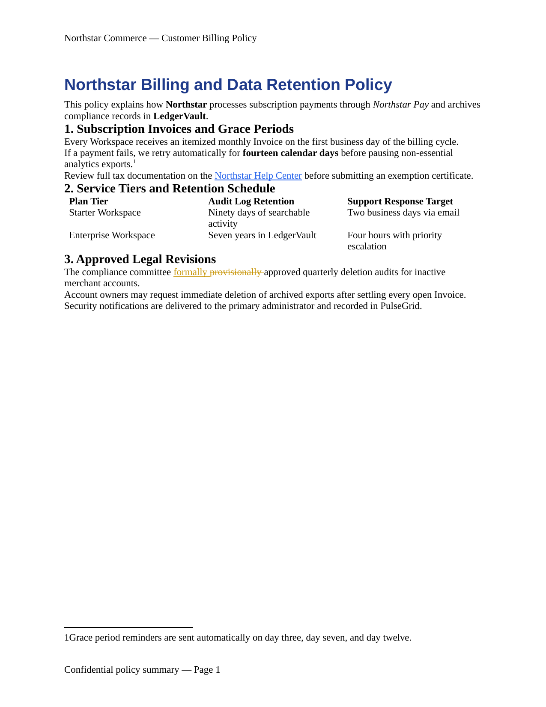
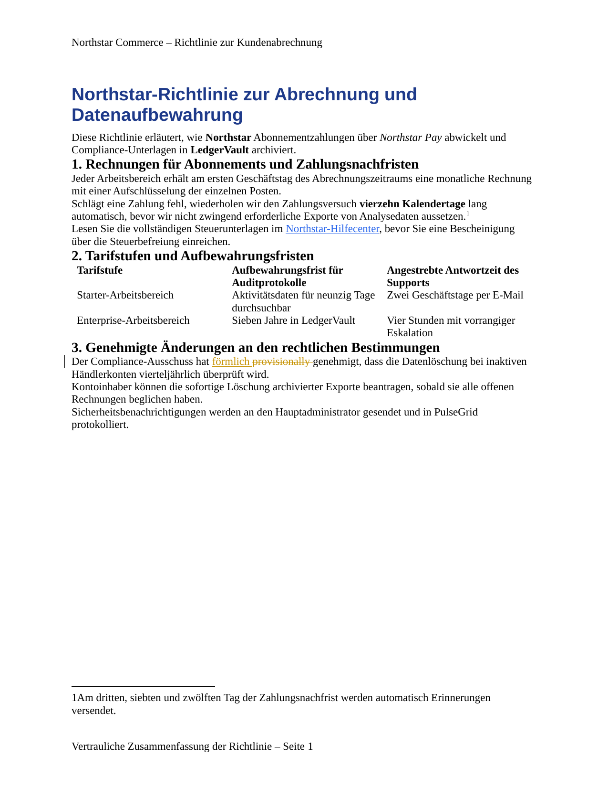
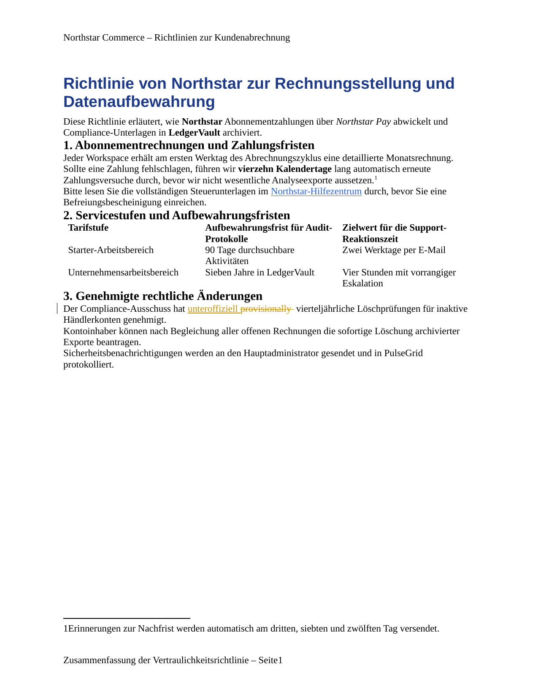
gov-grant-form.docx → ja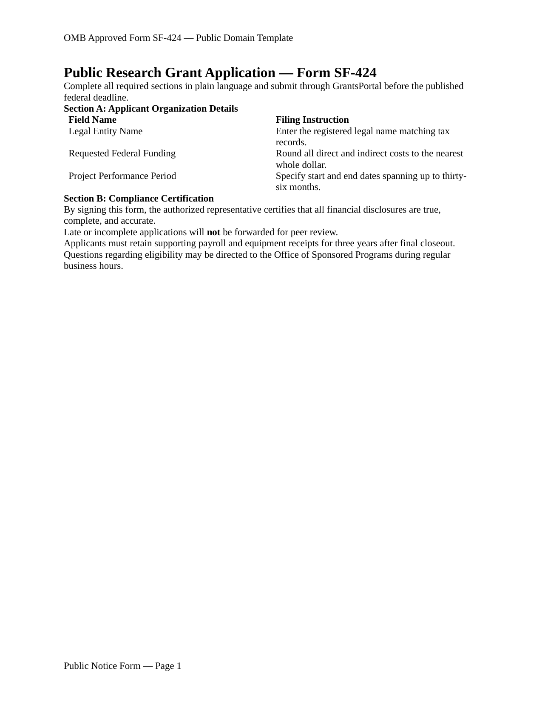
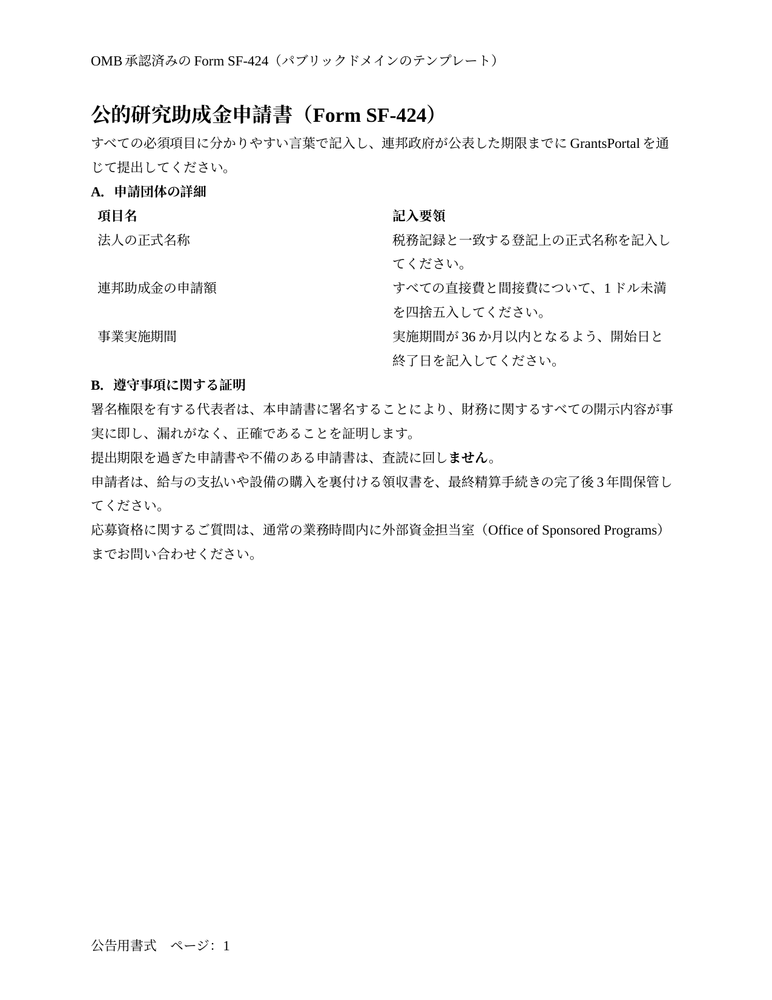
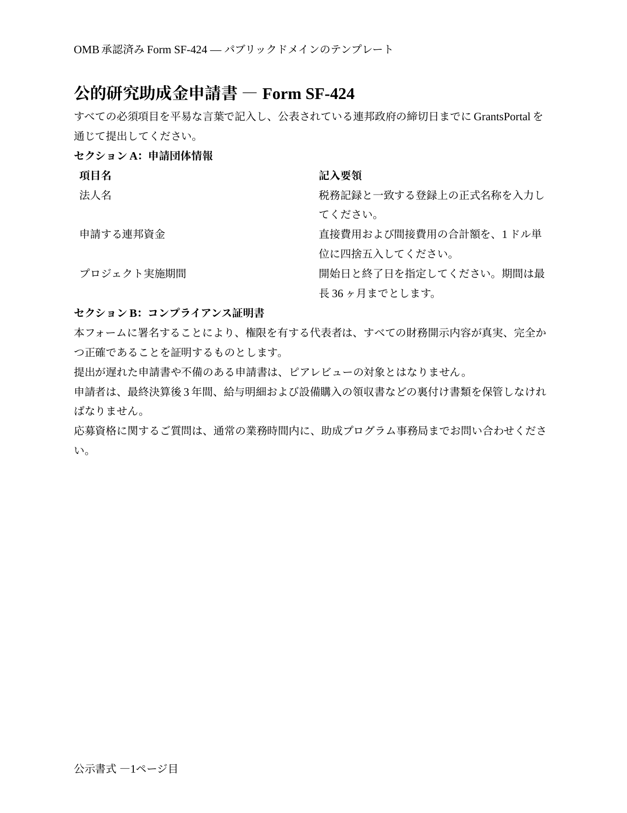
open-sustainability-report.docx → ar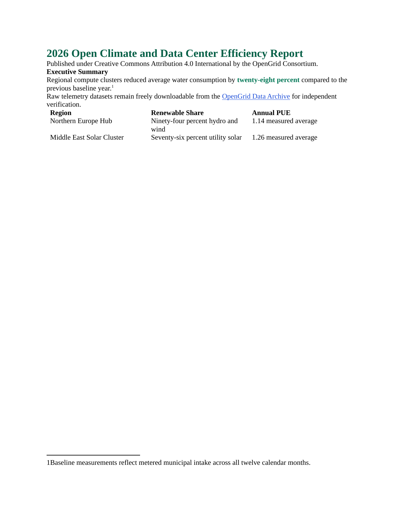
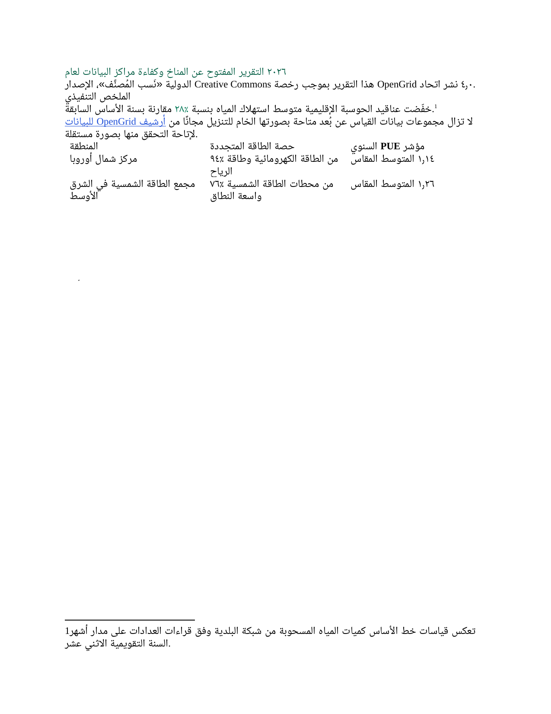
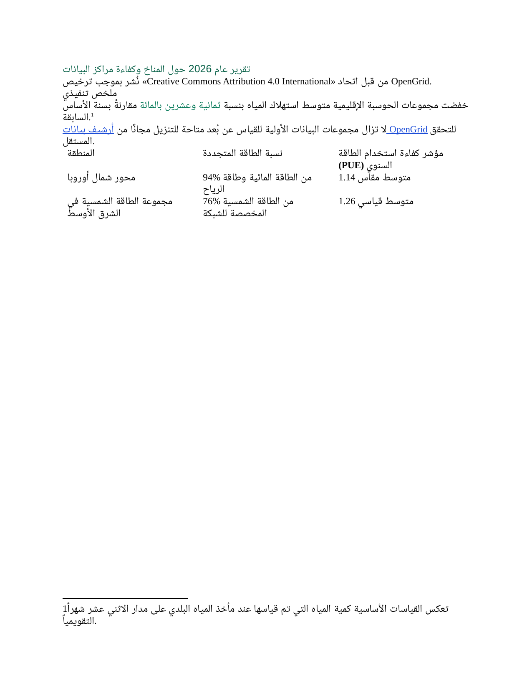
libreoffice-revisions.docx → pl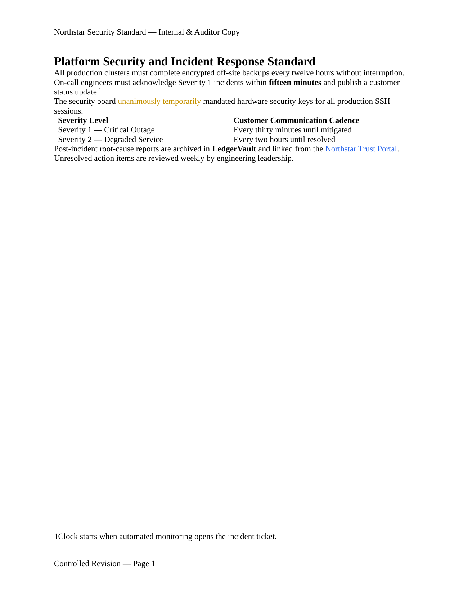
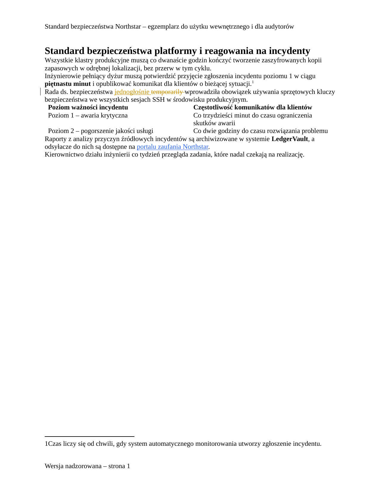
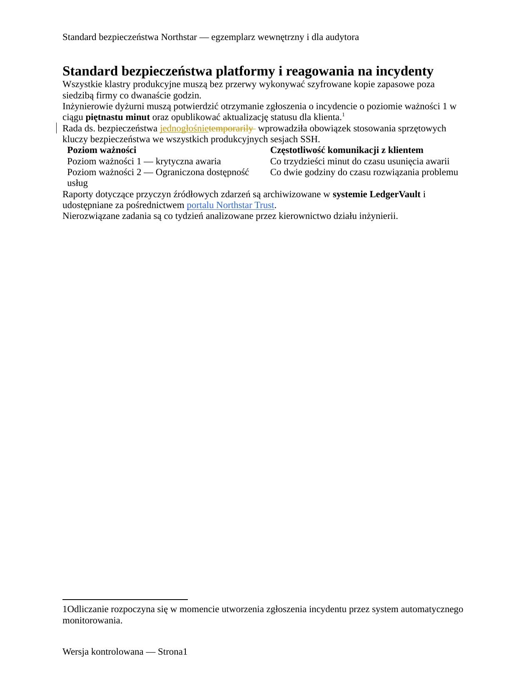
layout-v1 Branch)f317563. After Stage 3 finished, release blockers and Layout & Formatting v1 were built on layout-v1 and only the layout check was re-run across 7 locales (375px & 1280px).| Stage | Outcome | Total Rendered Defects | Clipped Text | RTL dir/lang Mismatch | Horizontal Overflow | Static Physical-RTL Risks |
|---|---|---|---|---|---|---|
| Baseline (f317563) | FAIL | 26 | 15 | 4 | 7 | 1 |
After Step 1 (layout --fix mechanical codemods) | FAIL | 8 | 0 | 0 | 8 | 0 |
| After Step 2 (Agent applies prescribed flex-wrap edit) | PASS | 0 | 0 | 0 | 0 | 0 |
482 items in 165 recurring groups; locales de, ja, ar, es; 40% of recurring patterns TM-seeded. Judge: pending.
| Slice | Gold | Items | Unique Sources | TM Entries | A-full TM Hits | Per Locale |
|---|---|---|---|---|---|---|
synthetic-app | author-provided | 256 | 18 | 28 | 99 | de: 64, ja: 64, ar: 64, es: 64 |
oss-next-intl | human-oss | 40 | 7 | 7 | 18 | de: 24, ja: 8, es: 8 |
oss-hoppscotch | human-oss | 186 | 37 | 32 | 77 | de: 33, ja: 28, ar: 35, es: 90 |
| Arm | Context | TCR | ICU/Tag Parity | chrF2 | TER | MQM / 100 |
|---|---|---|---|---|---|---|
| B (source + locale) | source, targetLocale | dry run — no outputs | ||||
| B+glossary | source, targetLocale, glossary | dry run — no outputs | ||||
| A-no-tm (AST UI context + width budgets + glossary; tmEnabled:false) | source, targetLocale, glossary, file, component, elementType, widthBudget, localeConventions | dry run — no outputs | ||||
| A-full (A-no-tm + top-3 fuzzy TM, minSimilarity 0.70) | source, targetLocale, glossary, file, component, elementType, widthBudget, localeConventions, tmMatches | dry run — no outputs | ||||